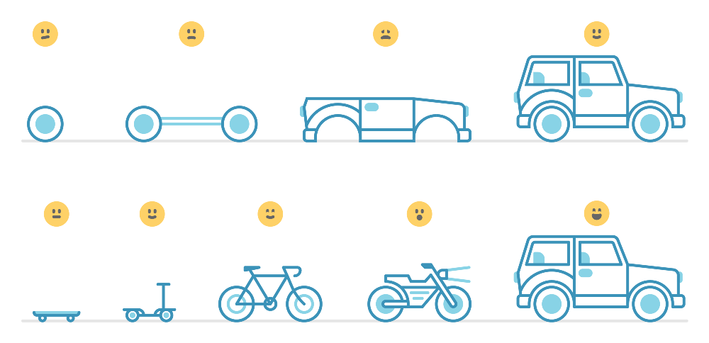

Julie Ng
W1 FWD Build Week
20 June 2017
Design decisions about any system that keep implementators and maintainers form exercising needless creativity.
- D'Souza, Wills. Objects, Components, and Frameworks with UML: The Catalysis (SM) Approach; Addison-Wesley Professional 1998
Source: Monteiro, Mike. Design Is a Job. A Book Apart 2012
Skateboard, Bike, Car
Source: Wilkinson, Andrew. "Building Products The MetaLab Way"
https://medium.com/@awilkinson/skateboard-bike-car-6bec841ed96e
→ Iterate!
It is not necessary to do a Big Design Up Front (BDUF). In fact, BDUF is even harmful because it inhibits adapting to change
- Martin, Robert C. Clean Code (p. 167).
→ flexibility - always be learning and adapting
A system with many small classes as no more moving parts than a system with a few large classes.
- Martin, Robert C. Clean Code (p. 139).
→ Maintainable software
Image Source:
https://www.cloudbees.com/sites/default/files/
→ Move fast and automate learning